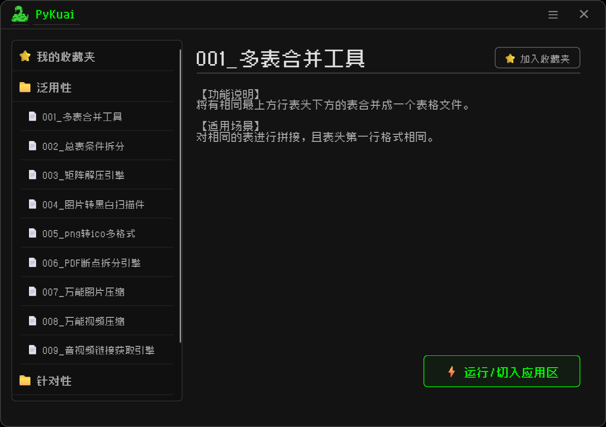

[01] 绝对泛用
涵盖日常自动化、数据处理、系统管理的通用脚本库，即插即用，满足一切基础幻想。
[02] 深度针对
针对特定复杂场景的高阶脚本合集，提供手术刀般的精准打击，解决痛点。
[03] 大集合生态
不止于工具，这是一个不断进化的脚本盒子生态系统，高度整合，包罗万象。
[04] 极简即极客
摒弃臃肿的UI，回归黑绿终端的浪漫，用最高效的底层代码驱动世界。

涵盖日常自动化、数据处理、系统管理的通用脚本库，即插即用，满足一切基础幻想。
针对特定复杂场景的高阶脚本合集，提供手术刀般的精准打击，解决痛点。
不止于工具，这是一个不断进化的脚本盒子生态系统，高度整合，包罗万象。
摒弃臃肿的UI，回归黑绿终端的浪漫，用最高效的底层代码驱动世界。